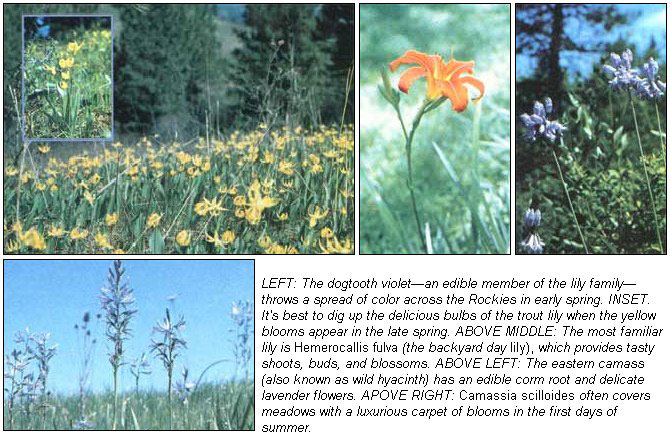

The ingredients for a memorable summer meal are probably just waiting to be collected from your back yard.
Although you've no doubt noticed the riotous display of color that can often be found in pastures, woods, and fields at this time of year, you may not know that there's another way to enjoy summer's wildflowers ... in tasty dinner dishes! Many members of the lily family in particular-several of which bloom in late summer-offer quite edible and delicious) food to the alert forager.
The classification Liliaceae-an enormous and diverse family-provides an especially rich variety of wild food ... in addition to such domesticated delicacies as leeks, onions, garlic, chives, and shallots. The group includes the so-called "true lilies" (members of the genus Lilium ) and many other genera as well. (Even though some of the 20 Lilium species native to North America are being threatened by the expansion of agricultural land or by excessive harvesting for ornamental purposes, not all lilies are in danger of extinction ... and the abundant varieties can tempt foragers with tasty bulbs, shoots, leaves, and blossoms.)
The familiar day lily (one decidedly unendangered species) will make a delicious contribution to any meal of wild foods. Chances are there's a bumper crop of the flowers within a short walk from your home ... so why not use the surplus plants to enliven your family's dinner menu? Such thinning won't hurt the flower stand at all, since the hardy plants reseed and spread quite readily.
Hemerocallis fulva is a perennial herb-native to an area stretching from New Brunswick to Ontario, then southward across much of the United States-which bears long, swordlike leaves and trumpetshaped orange blooms. Day lilies are a "double-barreled" food source, too ... since they have edible portions that can be harvested during both warm and cold seasons.
The early spring shoots are delicious when eaten raw in salads ... and, some months later, you can gather the nearly full-sized unopened buds, cook them in boiling water, add butter and seasoning, and serve them like green beans. Furthermore, the fully opened blossomswhich, because they last only one day, give the flower its name-make delicious fritters when dipped in a rich egg batter and quickfried to a deep golden brown. You can also add the flavorful buds and blooms (or even the withered flowers) to soups and stews.
Many wild food enthusiasts claim that lilies actually taste better after they've been dried ... and it's quite easy to dehydrate the buds and blossoms in your own attic (or in any warm, arid room). Simply spread the freshly gathered flower parts on sheets of newspaper for about one week ... or string them on heavy thread and hang them up. After they've completely dried, you can store the buds and flowers in separate airtight containers. Then-when you're ready to use them in recipes -regenerate the dehydrated blooms by soaking them in warm water (to cover) until they're soft and pliable again.
You can dig up day lily roots during any season of the year, as long as the ground isn't frozen ... but the best "harvests" will occur in the fall and winter, when the tinybulbs' flavor matures to the sweetness of whole-grain corn. To prepare the roots, wash and scrub them, then boil them in salted water for about 15 minutes before serving. (They can also be baked or roasted- like potatoes-until they're tender.)
Many of the "true" lilies are too rare to be collected as food ... but the Canada lily (Lilium canadense) and the Turk's-cap lily (L. superbum) each provides good -and abundantfare. The stems and leaves of the two plantsboth of which produce large orange-red blooms in the late summer-can be cooked like green vegetables and served with melted butter.
The famous northwestern camass-an edible member of the genus Camassia-grows from a bulb which can be boiled to produce a thick molasses. The plant attains an average height of two feet, and often covers the moist meadows of Washington, Oregon, and northern California with early-summer carpets of blue blossoms. In the past, the delicious, nutlike bulbs of the camass served as a major barter crop for the Nez Perce and other Northwest Indian tribes ... and the plant reportedly saved members of the Lewis and Clark expedition from starvation, after the group's more conventional supplies were exhausted.
The Indians steamed the small bulbs of Camassia quamash-in an underground pit-for one or two days until the soft tubers were oozing with sticky sweet syrup ... and then pressed them into cakes to dry in the sun. Camass bulbs can be eaten raw, dried, baked, or roasted ... although they should be used in small portions, since the plant tends to have an emetic effect if consumed in excess.
One eastern species of the camass, C. scilloides, is commonly called wild hyacinth (because of the shape of its pale lavender flowers), although-like its western cousin-it's actually a member of the lily family. The herbaceous plant-growing in meadows and woods from Wisconsin to Pennsylvania-springs from a solid corm root ... which can be eaten raw, boiled for 20 to 30 minutes, or baked in foil at 350 °F for 45 minutes. The seed pods of the eastern camass are also edible ... and are tasty raw (in salads) or cooked as a green vegetable.
Approximately 15 species of the genus Erythronium are native to North America: Four are found east of the Mississippi, while the rest grow in the western mountains and northward to British Columbia. These edible lilies, which are often known by such unlikely names as adder's-tongue and dogtooth violet, can provide prime foraging material, since most of the species spread readily ... and are not in danger of becoming rare or extinct.
The most well-known eastern Erythro nium species is E. americanum (commonly called the trout lily), which grows in moist woody regions of central North America. Its deeply buried solid roots are edible year round, but are more easily found in late spring when the flowers appear. You can eat the roots boiled for 20 to 25 minutes and served with butter ... or you might like to try the green leaves and seed pods raw in salad. Keep your portions moderate, however: The trout lily may act as a laxative when eaten in quantity!
The western E. grandiflorum-which is most often referred to as dogtooth violet-prefers the cool, damp soil of the Rockies ... and starts blossoming soon after all the snow is gone. Its new spring leaves make excellent additions to salads, as do the peppery seed pods. Dogtooth bulbs (which can be boiled and dried for later use) are also edible in the raw state. In fact, one of my favorite wild food salads combines uncooked dogtooth tubers and seed pods with a mixture of fresh day lily shoots, wild hyacinth pods, watercress, chives, wild onions, sheep sorrel, and dandelion greens.
Although-as this article points outthere are many lilies available to every novice forager, you can't simply go out and bring home just any species you find. It's important that you make sure the plant is not endangered before you remove it. (Such information is available from local garden clubs or the state's natural resources agency ... and the latter office can provide you with a list of wildflowers that are rare in your area.)
When foraging, you must also be extremely careful not to collect a poisonous plant ... and several members of the Liliaceae family do contain dangerous toxins. (For example, the deadly Zygadenus-death camass"- closely resembles its edible relative: However, normal camass blossoms range from blue to white, while the death camass bears cream-colored blooms. Every part of the death camass is virulently poisonous ... and the toxic plant causes great losses of livestock annually.) In many cases, only an expertor a comprehensive field manual-will be able to help you positively identify the growth ... so don't dig up or eat any part of a plant unless you're totally sure of its identity.
But-as long as you stick to familiar plants and take advantage of the advice of a good field guide or an experienced forager-you should be able to put together many exciting, tasty summer meals with wildflowers. Using a little caution and a pair of sharp eyes (the essential tools of any wild food gatherer), you're sure to harvest a bucketful of lilies that are not only beautiful ... but also deliciously edible!
EDITOR'S NOTE: Both beginning and expert f oragers may be in teres ted in these excellent field guides and cookbooks:
[1] Feasting Free on Wild Edibles by Bradford Angier, $5.95.
[2] Color Field Guide to Common Wild Edibles by Bradford An gier, $2.95.
[3] A Field Guide to Edible Wild Plants of Eastern and Central North America by Lee Peterson, $8.95.
[4] Stalking the Wild Asparagus by Euell Gibbons, $3 .95.
[5] Billy Joe Tatum's Wild Foods Cookbook and Field Guide, edited by Helen Witty, $4.95.
You can buy these fine works in many good bookstores, or order them for their listed prices (plus $1.00 shipping and handling for any purchase totaling less than $10 ... larger orders are postpaid) from Mother's Bookshelf, P.O. Box 70, Hendersonville, North Carolina 28791.
|
 |
|
|